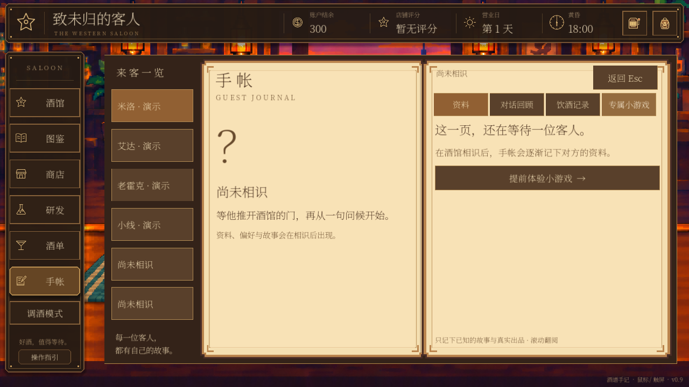
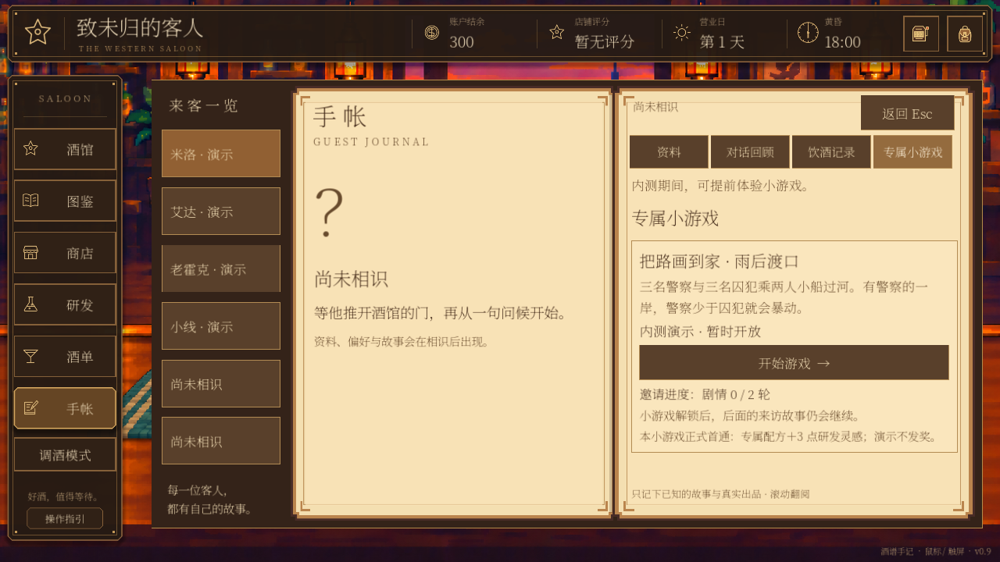
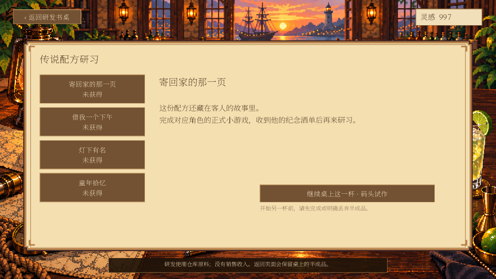
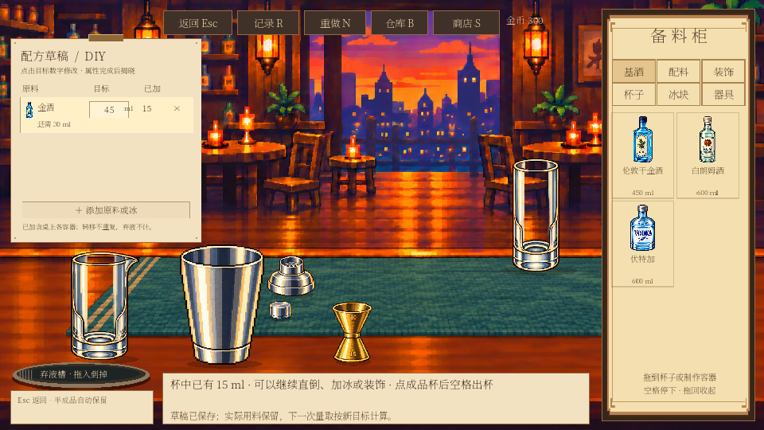
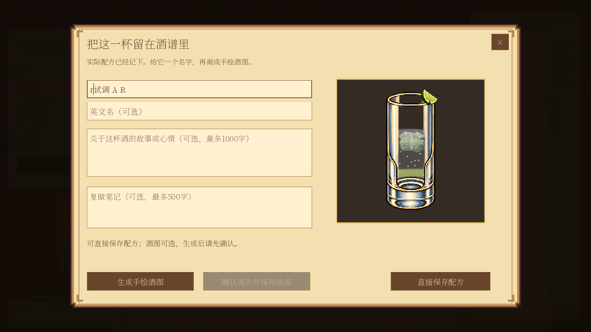

2026-10-19 · 以下为 Godot 实机截图。全部使用临时测试存档，截图内的库存、金币与剧情状态仅用于验证。
资料、对话、饮酒、小游戏各自展示对应内容；底部说明与边框分开。

内测入口仍然保留，正式剧情解锁与演示访问继续分开。

固定像素边角比例，修正竖纸拉伸与标题压线。

960×540 实机截图；去掉旧手绘纹理，保留目标编辑和已加用量。

浅纸色输入框与深色字，焦点边框清楚，整体使用像素边框。
